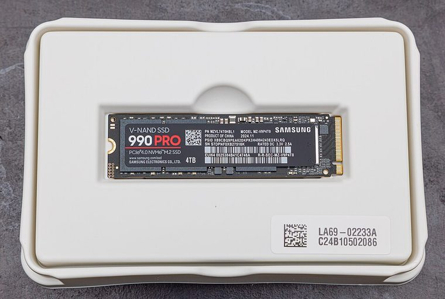
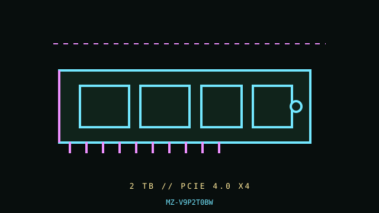

[ PCIE 4.0 NVME DRIVES // IDENTIFIED PRODUCT ]
Samsung 990 PRO 2 TB
2 TB M.2 2280, bare module; PCIe 4.0 NVMe SSD. Cataloged by the complete manufacturer part number below; performance figures are vendor-rated, not independent test results.


IDENTIFICATION: Verify the complete MPN, suffix, serial/date code, hardware revision and firmware against the product label. Capacity variants, factory heatsinks and regional SKUs may differ; the link and rated data below apply only to the specified configuration where the manufacturer identifies it.
Manufacturer-identified specifications
| Product / MPN | Samsung 990 PRO 2 TB — MZ-V9P2T0BW |
|---|---|
| Capacity / form factor | 2 TB; M.2 2280, bare module. |
| Interface / lane width | PCIe 4.0 x4. |
| Protocol | NVMe 2.0. |
| Rated performance / endurance | Sequential up to 7,450 MB/s read and 6,900 MB/s write; 1,200 TBW endurance, 2 TB SKU. |
| Model era | 2022 product generation; check manufacturer lifecycle/support notice. |
| Heatsink / revision | Bare module; separate factory-heatsink SKU exists (MZ-V9P2T0CW). This bare MPN does not include the factory heatsink. |
Compatibility, installation & service
- Samsung published firmware/health-management advisories for early 990 PRO firmware. Identify exact firmware and check Samsung support for current guidance before deployment; do not infer health from a single third-party tool. PCIe 5 hosts can negotiate Gen4, but do not expect Gen5 bandwidth. Boot NVMe support is host firmware dependent.
- Confirm M-key PCIe/NVMe signaling, 2280 support, available lanes, UEFI NVMe boot, and shared SATA/PCIe routing in the motherboard manual. If a board cover is used, verify thermal-pad contact and clearance; do not combine the bare drive with a conflicting aftermarket/factory heatsink. Record SMART health and firmware, back up before updating, and check temperature during long transfers because high-speed writes can throttle in restricted airflow.
- Do not hot-plug an M.2 module unless the server/platform manual explicitly documents hot-plug support. Shut down cleanly, disconnect standby power when instructed, and use electrostatic-discharge precautions during handling.
- Before replacing a boot drive, verify a recoverable backup, OS recovery media, encryption keys, firmware settings and the target system’s boot mode; physical fit does not establish compatibility.
Manufacturer references
- Samsung 990 PRO — manufacturer product specificationsOfficial manufacturer product/specification reference; use the exact MPN on the drive label and its linked specification/downloads for revisions, capacity ratings, fit and warranty limits.
- NVM Express — specifications and technical documentationStandards reference for NVMe; it does not establish this product’s SKU-specific implementation.
Manufacturer ratings are model/capacity-specific and measured under stated vendor conditions; they are not guarantees of sustained speed in every host. Confirm current datasheet/manual, support status and warranty in the manufacturer’s regional support portal before deployment.